The types of projects are defined in xeoBabel, you can see then if you write "java -jar xeoBabel.jar -H"
also you can see in the menu of xeo (Export -> xeoBabel).
Diferents types of projects:
(on principal manager) press button left of the mouse -> open project (F4)
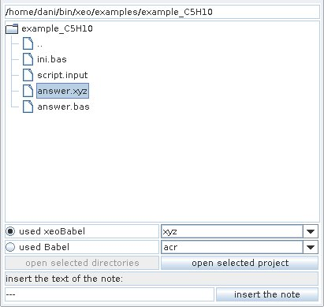
if you use xeoBabel, then the type of project is automatic selected.
if you use Babel, then you must to select the type of project.
You can open directories and keep in this way the path.
If you use the option (use icons for the atoms) the icons of the atoms are load from external files.
If you want to change the icons, you have to repaint this files.
The localization of this files are in the folder ".xeorc".
A easy way to found this folder is press "info" in the jTree menu (press left button of the mouse)
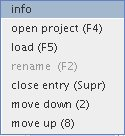
In the information:
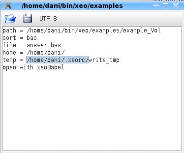
In the folder .xeorc/iconos the are some examples:
C.gif
Si.gif
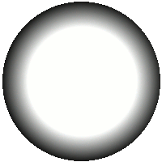
H.gif
You can use as icon what ever you want...
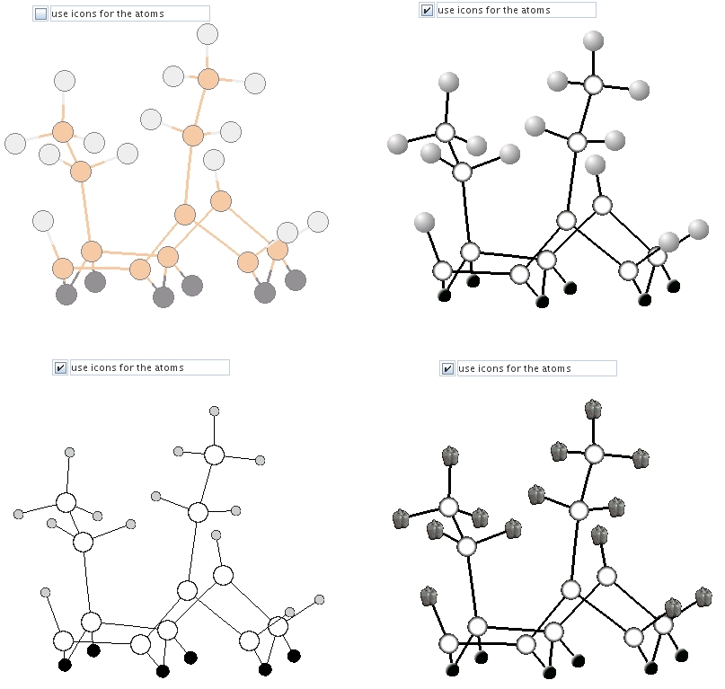
You can change and edit new icons, when a new installation is doing, if the folder .xeorc exist
the installation does not change this folder. And your options and icons should be conserve.
If you use the option (use icons for the atoms) the color of the bonds are the same as the color of the Axis
x[1] = is X for atom 1
.
.
x[i] = is X for atom i (X[i] is the average)
y[i] = is Y for atom i (Y[i] is the average)
z[i] = is Z for atom i (Z[i] is the average)
d[1][2] is the distance for atoms 1 to 2
d[i][j] is the distance for atoms i to j (D[i][j] is the average)
a[1][2][3] is the angle for atoms 1 to 2 and 3
a[i][j][k] is the angle for atoms i to j and k (A[i][j][k] is the average)
//-----EXAMPLE-----
x[1]
z[3]
d[1][2]-y[3]
//-----------------
this plot 3 columns,
the firt is de X of the atom 1
the second is the Z of atoms 3
and the last is the diference betwen de distance of
atom 1 to 2 minus de Y of the atom 3
for the functions of the calculator see
the help of the calculator.
xeo is a free (GPLv3) open project management for nanostructures using Java
Copyright (C) 2009 by Daniel González Trabada
This program comes with ABSOLUTELY NO WARRANTY; for details type `xeo show w'.
This is free software, and you are welcome to redistribute it
under certain conditions; type `xeo show c' for details.
xeo show w
xeo show c
$xeo -version
xeo 2.0
$xeo -Calc 3*8
24.0
You can select the language (Options -> language) and then (Options -> save options)
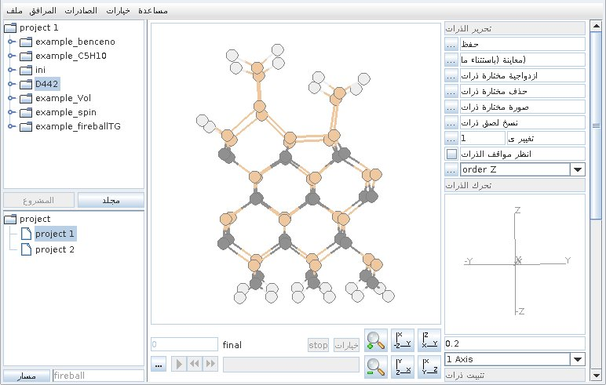
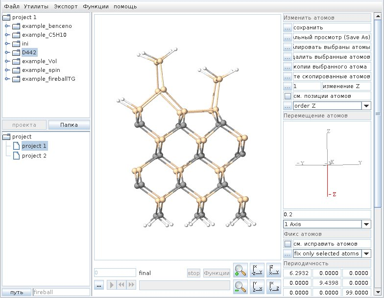
Some languages are not suported, for example (chinese)
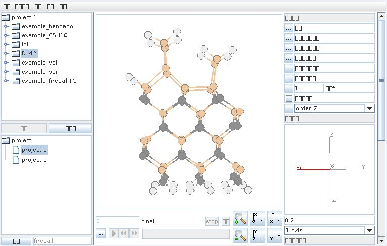
You can download the Font, (*.ttf) and (Options -> Font) then load from file. finaly (Options -> save options)
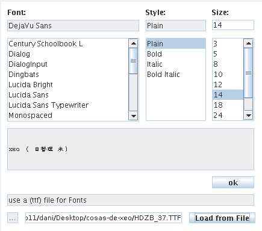
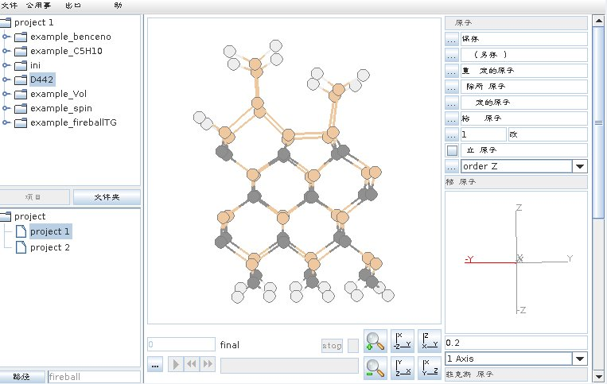
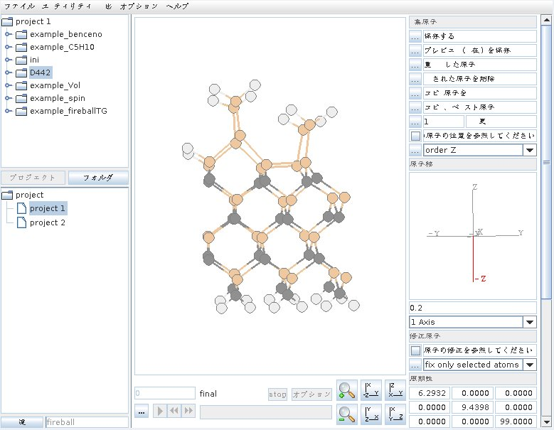